配色对比 · 只换颜色不改样式 ✳
左边是线上现在的样子，右边是只把颜色换成新色系后的效果。布局、字体、圆角、投影、发光、按钮形状都没动，截图都是游戏真实运行时截的。3D 擂台的灯光和机甲颜色还是原来的。
#F569A8玫红 ← 原玫红#DEFF72亮黄绿 ← 原青蓝#FFE135香蕉黄 ← 原金/橙#B7A4FF淡紫 ← 原紫#7FE5CD薄荷 ← 原绿#171719黑 ← 原深蓝黑#232126深灰 ← 原蓝灰#F5F4F0白 ← 原冷白
对战主界面左侧我方血条/高光变玫红，右侧敌方由青蓝变亮黄绿；FIGHT 光晕与描边同步换色
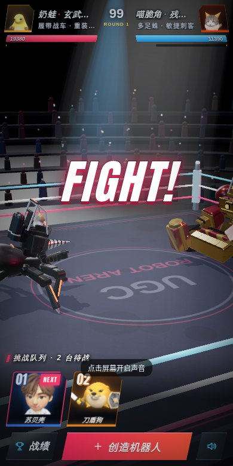
原配色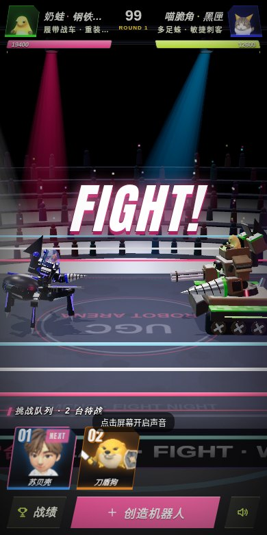
新配色大招助力横幅、TAP、数字发光换成玫红 + 黄绿 + 香蕉黄（底色光晕跟随机甲自身发光色，非 UI 色）
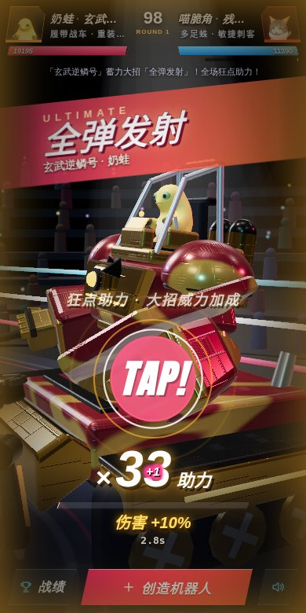
原配色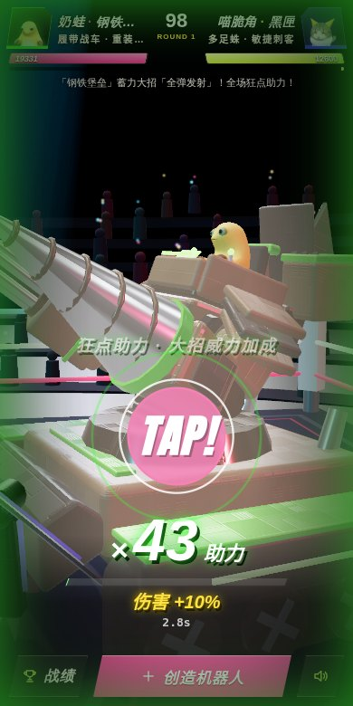
新配色创造机器人标题强调、属性条、技能标签、主按钮换到新色；布局与 v6.1 完全一致
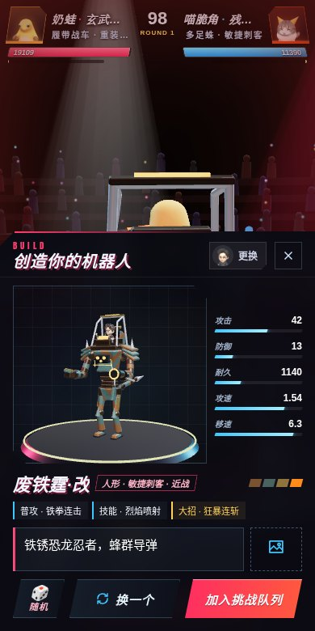
原配色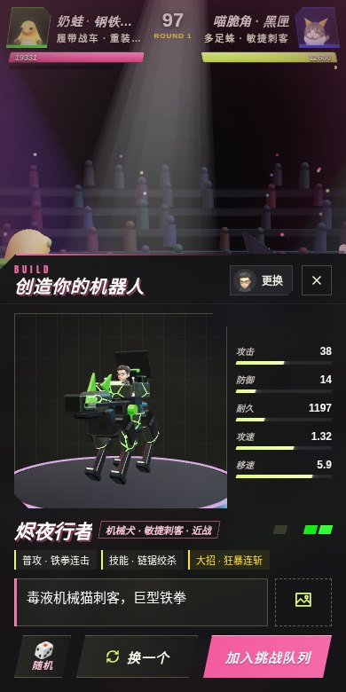
新配色选择分身选中态、确认按钮换色；已是 9 个分身
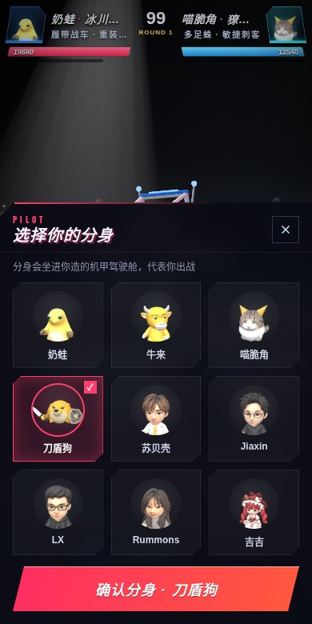
原配色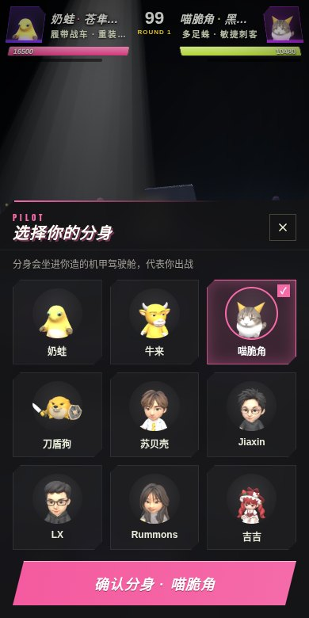
新配色今日战绩排名强调色、分隔、名次数字换色
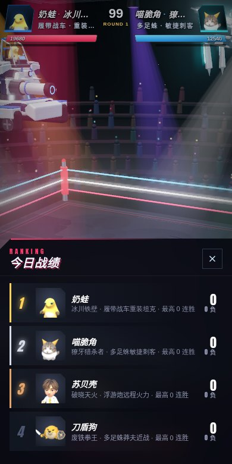
原配色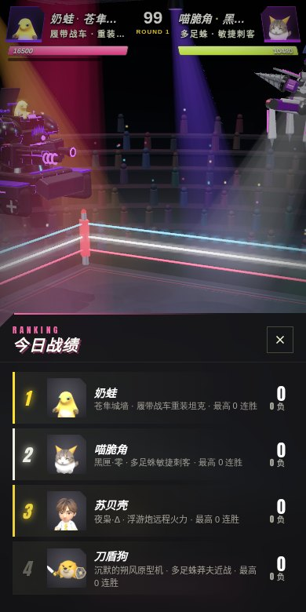
新配色WINNER金色 3D 投影换为香蕉黄系，小字已固定在下方
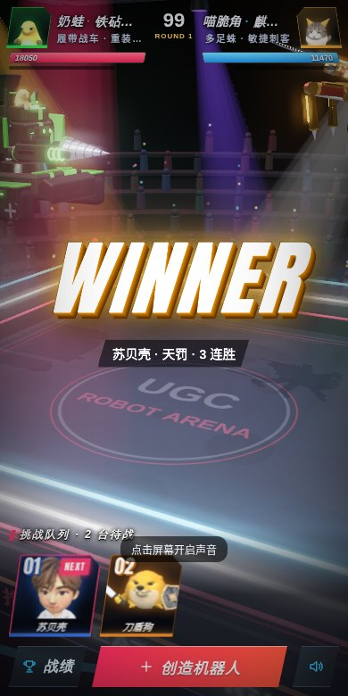
原配色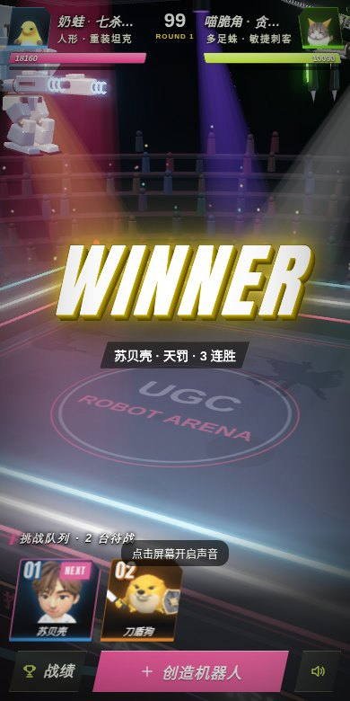
新配色上一版（大改样式的扁平稿）还留着：flat.html